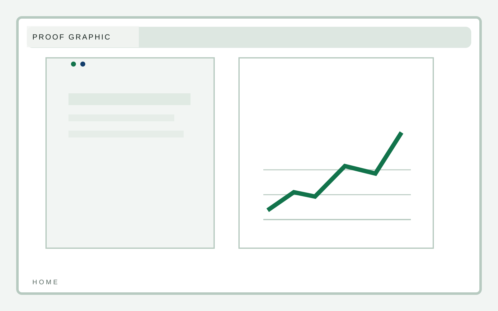
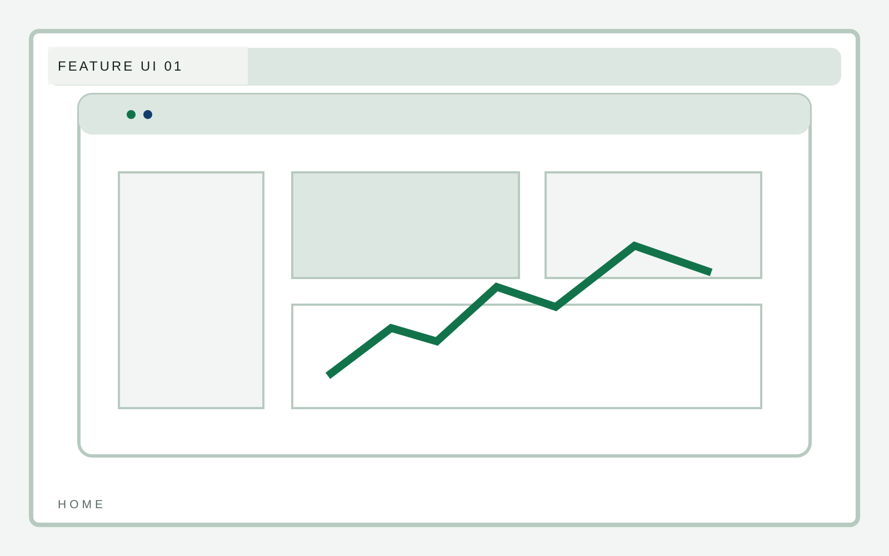

Activation
Fast team rollout
B2B software
A software marketing template that puts product UI, workflow clarity, and proof structure ahead of the usual startup chrome. Interface scenes should do more of the selling than decorative gradients ever could.
B2B software
Feature architecture should read like product thinking. Use the section to show how the system is organized, not just what it claims.
B2B software
Proof needs to be product-adjacent: usage lift, time saved, lower handoff friction, and better operating visibility.

B2B software
Workflow framing should connect interface scenes to real sequences of work instead of floating isolated UI cards in empty space.

B2B software
Pricing preview should orient the buyer without turning the home page into a sales sheet.
B2B software
The demo CTA should feel like the product continues through the form, not like the site hands off to a generic lead funnel.